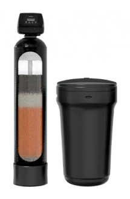
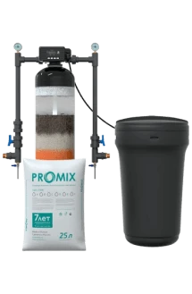
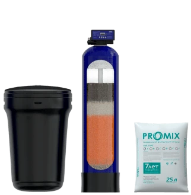
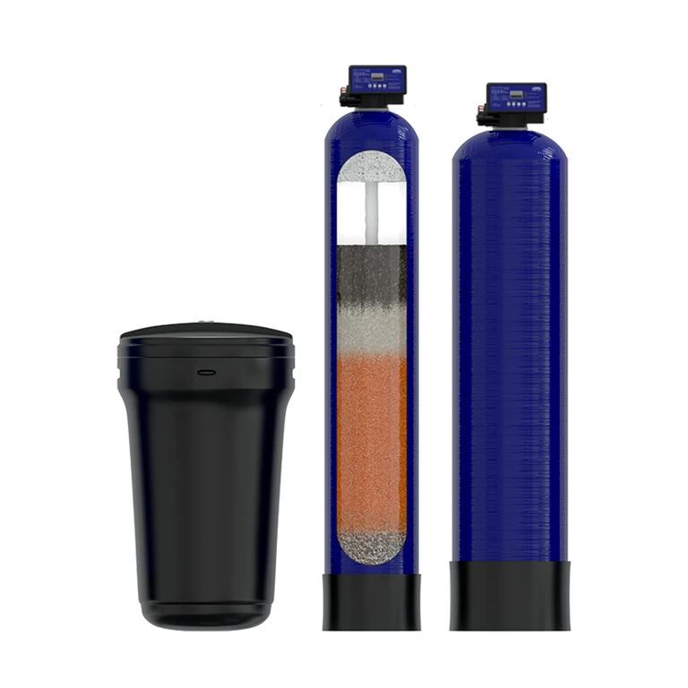

WiseWater ProMix
Железо, жёсткость и марганец
111 111 ₽ · ориентир до анализа
ОткрытьКомплексные системы: типоразмер и комплектацию подбираем по анализу воды.

Железо, жёсткость и марганец
111 111 ₽ · ориентир до анализа
Открыть
Железо, жёсткость и марганец
111 111 ₽ · ориентир до анализа
Открыть
Железо, жёсткость и марганец
111 111 ₽ · ориентир до анализа
Открыть
Несколько показателей протокола
111 111 ₽ · ориентир до анализа
ОткрытьКаждая следующая ступень работает с водой, которую подготовила предыдущая, поэтому оценивают всю цепочку, а не отдельно взятый корпус.
Одна универсальная колонна и несколько узких ступеней закрывают общую задачу по-разному. Сравнивать удобнее на конкретных сборках, где видно, за что отвечает каждый корпус.
Компактная схема в пределах допустимой нагрузки по анализу.
Проверить по анализуРаздельное обезжелезивание и умягчение отдельными ступенями.
Проверить по анализуАэрация, фильтрация, умягчение и финишная ступень.
Проверить по анализуИсходные данные по источнику.
ОткрытьТиповые комплектации и полная цена.
ОткрытьОбвязка нескольких ступеней.
ОткрытьСравнивают не количество баллонов, а рабочий диапазон по анализу, пиковую производительность, потерю давления, расход воды и соли на регенерацию, габариты, автоматику и стоимость содержания. Универсальность подтверждается диапазоном, в котором загрузка действительно работает, а не словом в прайсе. Просите оба предложения в одинаковой форме, иначе сравниваются не системы, а обещания.
Зависит от схемы: байпас и запорная арматура позволяют вывести ступень из работы и не остаться без воды совсем, но качество на это время изменится. Порядок ступеней тоже важен – каждая следующая рассчитана на воду, которую подготовила предыдущая. Возможность обойти узел закладывают при проектировании, а не ищут в аварийной ситуации.
Считают не только площадь под корпусами, но и проходы для обслуживания, запас по высоте для перезасыпки загрузки, место под солевой бак и подход к автоматике. Помещению нужны слив, электричество, плюсовая температура и нормальная вентиляция. Если под всё это отведён узкий угол, схему пересобирают под место – это обычная часть подбора.
Регенерации разносят по времени, чтобы залповые сбросы не совпадали, и это отдельный пункт настройки, а не мелочь. Куда именно уходит промывочная вода, решают на этапе схемы: часть стоков в биологический септик заводить нежелательно. Дренаж делают с разрывом струи и с запасом по пропускной способности.
Комплексная схема готовит воду для всего дома, и её задача – техника, сантехника и бытовое использование. Нужна ли отдельная питьевая ступень, решают по анализу воды уже после системы и по тому, чего вы ждёте от кухонного крана. Название схемы само по себе питьевого качества не подтверждает.
Ответим, что проверить и сколько это будет стоить.